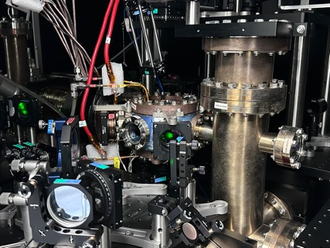

College Physics Experiment Reports
Some Reports of College Physics Experiments, only for reference.
College Physics Experiment I
- 01 - Measurement of Gravitational Acceleration
- 02 - Measurement of Liquid Surface Tension Coefficients
- 03 - Measurement of Liquid Viscosity Coefficients
- 04 - Measurement of Sheer Modulus
- 05 - Measurement of Young's Modulus
- 06 - Measurement of Mass and Density
- 07 - Measurement of Speed of Sound
- 08 - Measurement of Parameters of Lens
- 09 - Rectification and Wave-Filtering